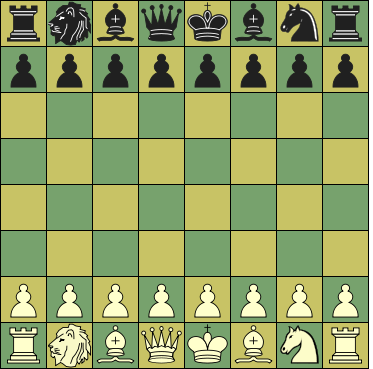

Sliding capture or non-capture,
can be blocked on any square along the ray


|  |
Initial setup
e1, e8: King
|
Click on a piece below to see its moves
|
|
|
|
|
Sliding capture or non-capture, | |||||||
|
| Unblockable leap (capture or non-capture) | ||||||||||
|
|
| Non-capture only | |||||||||
|
|
| Capture only | |||||||||
|
|
|
|
| Captured while passing through the square to another destination | |||||||
|
|
| ||||||||||
|
| |||||||||||
|
| |||||||||||
:
:
:
:
| Piece | ID | value | Moves (Betza notation) | Remarks |
| King | K | - | K | Can castle with Rook, moving 2 steps towards it |
| Lion | L | 15 | KADN(cK-aK)(K-bK) | Can make two independent King steps per turn (capturing upto two pieces) |
| Queen | Q | 9.5 | RB or Q | |
| Rook | R | 5 | R | |
| Bishop | B | 3.25 | B | Color-bound |
| Knight | N | 3.25 | N | |
| Pawn | P | 1 | mfWcfF | Promotes to Q, R, B, or N on reaching last rank |
A King that has not moved before can move two squares in the direction of a Rook that has not moved before, in which case that Rook is moved to the square the King skipped over. This is only allowed if all squares between King and Rook are empty, when the King is not in check on the square it came from, and would not be in check on any of the squares it skipped over.
The Lion can make two moves per turn. That means it can also capture two pieces per turn, one on the square it moves to (as normal), and one 'en passant' on the transit square. It can also capture on the transit square, and move on to an empty square ('hit and run'), or capture and move back to where it came from ('shooting' the piece from a distance, as it were). Of course it can also capture a single piece in the normal Chess manner. In that case the transit square is immaterial.
The Lion can make such double moves as two King steps, i.e. in all directions, and arbitrarily changing direction between them. It can also jump over the transit square, i.e. reach the distant two-step destination in a single jump. Finally it can also just make a step to an adjacent square, refraining from taking a second step.
There are rules to make Lion trading very difficult, in order to keep the Lions in play. Basically they specify that two Lions cannot be captured in consecutive half-moves. When the first capture is Lion x Lion from a distance, it is forbidden to play it if pseudo-legal (i.e. without taking account of check) recapture of the capturing Lion is possible with another piece than King. So even when the Lion is protected only with a pinned piece, the other Lion cannot capture it from a distance, just like a King could not capture it.
When a non-Lion captures a Lion, it is just the other way around: then the 'counterstrike' by a non-Lion against the Lion is forbidden. One possibility left open is thus when you capture an adjacent Lion. But then you would in general be foolish to allow recapture, as you could take the Lion hit-and-run fashion, fleeing to a save square. An exception to the rule is when a valuable opponent piece (i.e. not a Pawn) forms a 'bridge' between the Lions; you may then capture that piece in the first leg of the double-move, and then take the opponent Lion with the second leg. Then the opponent can recapture, but he will have lost a valuable piece. In the late end-game, when you have nothing to protect your Lion with other than King, trading becomes possible.
This game has to be played with the option Show Target Squares on! This option will cause marking of the target squares of any piece you select or grab, by the engine (with legality testing off) or by XBoard (legality testing on). Moving to a square marked in cyan will be interpreted not as the final destination, but as the transit square after the first step of a multi-leg move. XBoard will then highlight the possible destination squares of the second leg from there. Should you want to end on the cyan square, you click it again, (it will be no longer marked in cyan), and XBoard will terminate the move after the first leg. You can also move back to the starting square, to 'shoot' the opponent piece from nearby.
One Knight is replaced by a Lion piece with very special properties.
It is not possible to force checkmate on a bare King with just a single Bishop or Knight (in addition to your own King). Two Knights cannot do that either.
Bishops are confined to squares of a single color. Having Bishops on both colors compensates this weakness, and is worth an extra 0.5 on top of their added value.